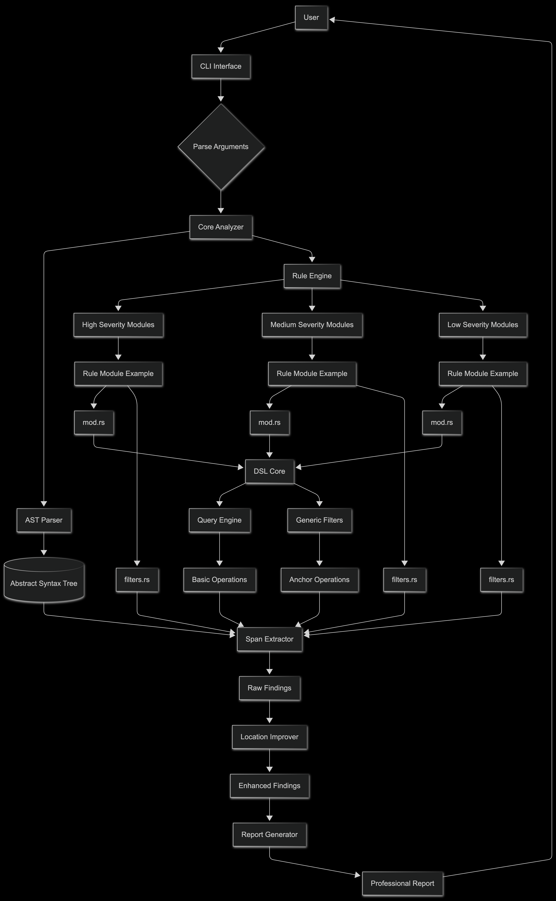
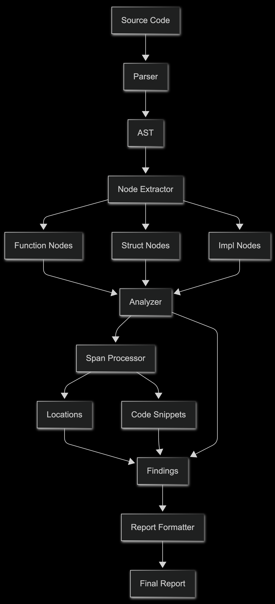
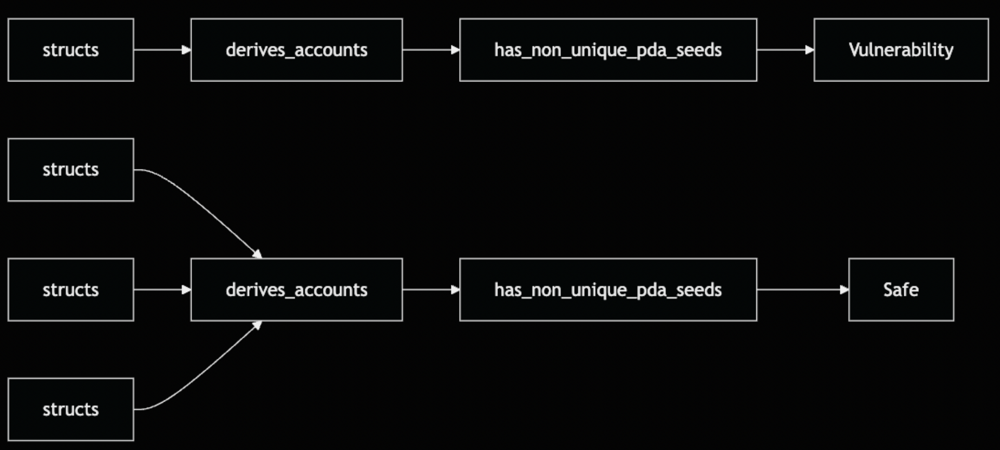
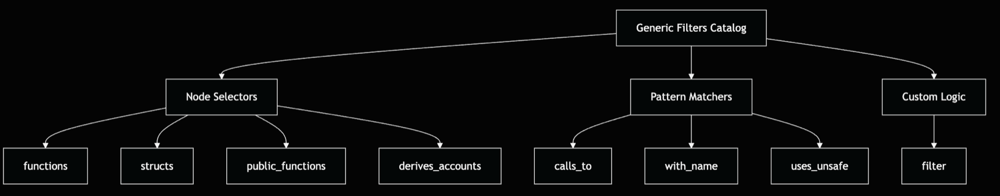
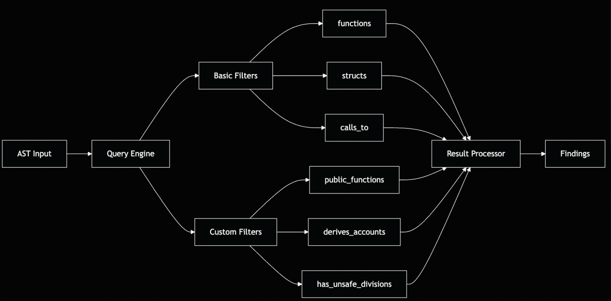
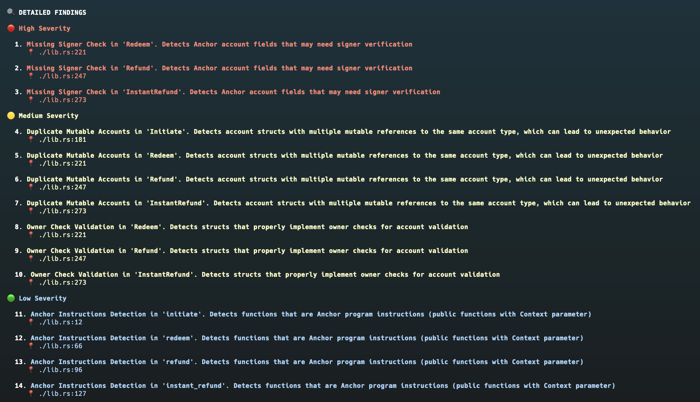
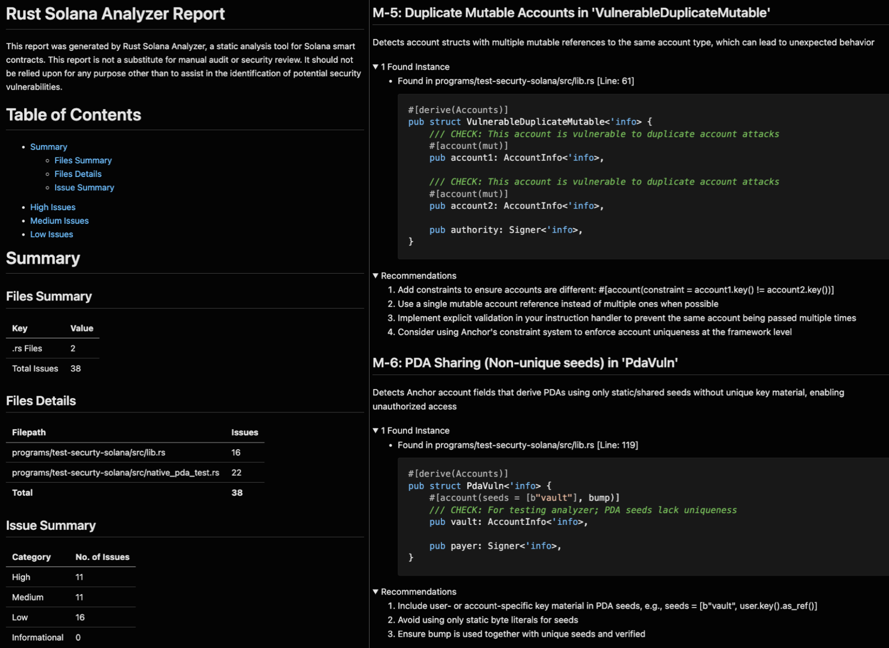
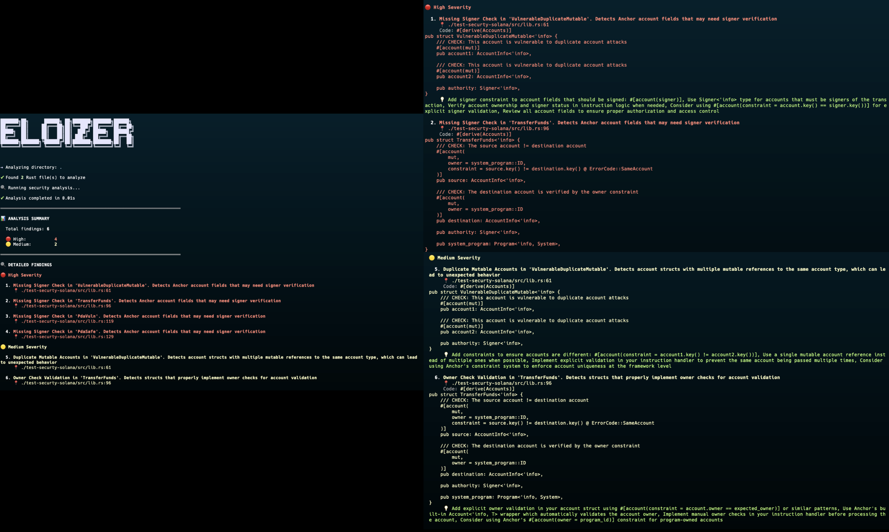

This post introduces Eloizer, a static analyzer for Solana programs that we built and released as open source.
Introduction
Eloizer is a static analyzer for Solana programs. It parses Rust source files directly without requiring compilation, applies detection rules to find common vulnerability patterns, and reports findings with precise source locations. The tool runs in under a second on most projects, making it practical for use during development.
We built Eloizer because we needed a fast, extensible way to catch security issues in Solana code. It detects problems like missing ownership checks, duplicate mutable accounts, and unchecked arithmetic operations. The tool includes a DSL for writing custom detection rules, so you can add checks specific to your project without modifying the core analyzer.
This post explains how Eloizer works: the architecture, the rule system, and how to use it. We'll cover the trade-offs between source-level and compiler-based analysis, show how to write custom rules, and demonstrate the CLI usage.
Motivation
Security auditors combine multiple techniques when analyzing smart contracts: manual code review to understand program logic, fuzzing to discover unexpected behaviors, and formal verification for critical properties. Each technique has tradeoffs.
Static analysis occupies a specific niche: fast, automated detection of known vulnerability patterns. It won't catch every bug, and you still need dynamic analysis and human review, but it catches common mistakes instantly. When integrated into development workflows, it surfaces issues early, when fixes are cheap.
We built Eloizer since at the time, open-source static analysis options for Solana were scarce. We wanted a tool that could:
- Run locally during development, fast enough for iterative use
- Integrate into CI pipelines with deterministic results
- Support custom rules without forking the analyzer
- Provide precise source locations for IDE integration
Architecture
Eloizer's architecture separates concerns into distinct components:

The architecture has three main layers:
- RuleEngine: Manages rule registration and execution. Rules can be filtered by severity, ID, or type (Anchor, Native and other frameworks).
- Analyzer: Coordinates file discovery, parsing, and rule execution.
- DSL Layer: Provides
AstQueryfor querying the AST andRuleBuilderfor defining rules declaratively.
Parsing Libraries
Compiling a Solana project often requires nightly toolchains, BPF targets, and long build times, which is too slow for an analyzer meant to run on every change. Eloizer avoids the compiler and reads the source directly with two complementary crates.
syn: The foundational parsing layer that transforms Rust source files into structured AST representations (syn::File). With thefullandvisitfeatures enabled, it provides automatic traversal capabilities for all Rust syntax elements,implblocks, expressions, attributes, macros, and source spans. This eliminates the need for manual visitor implementations and forms the basis for all syntax-level rule detection.anchor-syn: A specialized layer that interprets Anchor framework constructs. It processes procedural macros like#[derive(Accounts)],#[instruction], and#[event], transforming them into typed representations (AccountInfo,Signer,UncheckedAccount). Additionally, it extracts Anchor's constraint metadata (is_signer(),has_one,seeds) that would otherwise only be validated at runtime.
As a result, Eloizer parses the project once with syn to build the full AST, and only the nodes that require Anchor semantics are delegated to anchor-syn. This approach preserves speed while maintaining awareness of macros and their constraints.
Understanding the Design Trade-offs
Static analyzers face a fundamental architectural decision: operate at the source level through direct parsing, or integrate with the compiler for semantic analysis. This choice shapes both capabilities and constraints.
Eloizer takes the source-level approach, parsing files directly with syn and anchor-syn without requiring compilation. Trail of Bits' solana-lints exemplifies the alternative, a compiler plugin using Dylint that operates within rustc itself.
Compiler Integration Approach
Running inside rustc grants access to the compiler's semantic understanding:
- Dataflow tracking: Follow variable values through assignments and control flow via MIR (Mid-level Intermediate Representation)
- Type resolution: Access complete trait implementations and type relationships through
rustc_middle::ty - Path analysis: Prove security checks execute on all possible code paths using dominator tree analysis
- Behavioral understanding: Analyze what code does, not just how it looks
These capabilities come with requirements: nightly Rust toolchain, rustc-dev components, successful compilation, and expertise in compiler internals (LateLintPass, rustc_hir, clippy_utils).
Source-Level Parsing
Operating directly on source code provides complementary advantages:
- Near-instant analysis: Results appear quickly without build delays
- No build requirements: Completely avoids Solana program's build process, no need for specific nightly toolchains, dependency discrepancies, or waiting for compilation. This is especially valuable when builds fail due to toolchain issues unrelated to the code being analyzed
- Resilience: Analyzes incomplete or broken code that won't compile
- Lightweight setup: Standard Rust toolchain suffices. No nightly or compiler components
- Approachable extension: The DSL abstracts complexity, letting security researchers write rules without compiler knowledge
The tradeoff is explicit: Eloizer identifies structural patterns and missing code elements but cannot perform full dataflow analysis or verify semantic properties that require type information.
Design Rationale
Three principles guided our architectural choice:
- Development integration: Sub-second analysis enables pre-commit hooks and real-time editor feedback
- Shift-left security: Detect issues during initial coding, before compilation attempts
- Community contribution: Lower the barrier for security researchers to add detection capabilities
The practical distinction lies in when each tool provides value: source-level analysis like Eloizer catches structural issues immediately as code is written, while compiler-based analysis requires successful compilation but can then verify deeper semantic properties. Neither approach is fully comprehensive, structural patterns can find vulnerabilities that semantic analysis might miss, and vice versa.
The Analysis Pipeline

The pipeline processes each source file through six stages:
1. File Discovery: Eloizer walks the project directory, identifying Rust source files (.rs).
2. Parsing: Each file is parsed using syn. The parser produces a syn::File AST containing the full syntactic structure: items (functions, structs, enums, modules), attributes, and expressions.
3. Node Extraction: Not every AST node is relevant for security analysis. The DSL's query layer extracts specific node types: functions (including those inside impl blocks), structs (particularly those with #[derive(Accounts)]), and relevant attributes. When a struct is Anchor-specific, we also run it through anchor-syn to obtain typed fields and constraint metadata before the rule logic executes. This extraction happens lazily as rules query the AST.
4. Rule Execution: Each registered rule runs against the parsed AST. Rules use the DSL to express queries like "find all functions that contain division operations" or "find account structs with duplicate mutable references". The query returns matching nodes, which are converted to findings.
5. Enrichment: Raw findings need context to be actionable. The SpanExtractor component maps AST spans back to source locations (file, line, column) and extracts code snippets. This enables precise error reporting.
6. Report Generation: Findings are formatted for output. The CLI supports terminal output with severity coloring, quiet mode for CI integration, and Markdown export for documentation.
Domain Specific Language
Writing detection rules directly against syn's AST types requires manually implementing visitor traits and handling traversal logic. Consider detecting structs that derive Accounts without the DSL:
// Without DSL: Manual visitor implementation
struct AccountsStructVisitor {
findings: Vec<Finding>,
}
impl<'ast> Visit<'ast> for AccountsStructVisitor {
fn visit_item_struct(&mut self, struct_item: &'ast ItemStruct) {
// Check if struct derives Accounts
for attr in &struct_item.attrs {
if let Meta::List(meta_list) = &attr.meta {
if meta_list.path.is_ident("derive") {
let tokens = meta_list.tokens.to_string();
if tokens.contains("Accounts") {
// Now check fields for duplicate mutables
if let Fields::Named(fields) = &struct_item.fields {
let mut mutable_count = 0;
for field in &fields.named {
// 30+ lines of attribute parsing...
}
}
}
}
}
}
visit::visit_item_struct(self, struct_item);
}
}Each rule would duplicate this boilerplate: AST traversal, pattern matching, span extraction, and result formatting. We built a DSL that eliminates this repetition by separating what to detect from how to traverse the AST:
// With DSL: Declarative query
AstQuery::new(ast)
.structs()
.derives_accounts()
.has_duplicate_mutable_accounts()The DSL has two core components: RuleBuilder for declarative rule definition and AstQuery for composable AST queries.
RuleBuilder: Declarative Rule Definition
The RuleBuilder provides a fluent API for defining rules. Instead of implementing traits and handling low-level details, you declare the rule's metadata and provide a query that describes what patterns to find:
pub fn create_rule() -> Arc<dyn Rule> {
RuleBuilder::new()
.id("duplicate-mutable-accounts")
.severity(Severity::Medium)
.title("Duplicate Mutable Accounts")
.description("Detects account structs with multiple mutable references...")
.recommendations(vec![
"Add constraints to ensure accounts are different",
"Use #[account(constraint = a.key() != b.key())]",
])
.dsl_query(|ast, _file_path, _span_extractor| {
AstQuery::new(ast)
.structs()
.derives_accounts()
.has_duplicate_mutable_accounts()
})
.build()
}The dsl_query closure receives the parsed AST and returns an AstQuery. When the rule executes, the builder automatically converts matching nodes to findings, attaching the rule's metadata, severity, description, recommendations, and extracting precise source locations via SpanExtractor. The author focuses on detection logic; the infrastructure handles finding generation.
AstQuery: Composable AST Queries
The AstQuery type is the workhorse of the DSL. It wraps a collection of AST nodes and provides chainable methods that filter and transform them:
pub struct AstQuery<'a> {
results: Vec<AstNode<'a>>,
}Each method consumes the current query and returns a new query with transformed results. This functional composition pattern ensures immutability and enables natural chaining:
AstQuery::new(ast)
.structs() // Extract all struct definitions
.derives_accounts() // Keep only #[derive(Accounts)] structs
.has_duplicate_mutable_accounts() // Custom filter for vulnerability patternInternally, each method iterates over self.results, applies its filter logic, and constructs a new AstQuery with the filtered nodes:
pub fn structs(self) -> Self {
let mut new_results = Vec::new();
for node in self.results {
if let NodeData::File(file) = node.data {
for item in &file.items {
if let Item::Struct(struct_item) = item {
new_results.push(AstNode::from_struct(struct_item));
}
}
}
}
Self { results: new_results }
}The pipeline processes nodes eagerly at each step. This reads almost like a description of what we're looking for: "From the AST, find structs that derive Accounts and have duplicate mutable accounts."
The design enables two categories of filters: generic (built into AstQuery for common patterns) and custom (implemented as extension traits for domain-specific logic).

Generic Filters
Generic filters are methods on AstQuery that handle common traversal patterns. They're implemented once and reused across rules.
| Filter | Description |
|---|---|
.functions() |
Select all function definitions, including those inside impl blocks |
.structs() |
Select all struct definitions |
.public_functions() |
Filter to functions with pub visibility |
.with_name("foo") |
Filter nodes by identifier name |
.calls_to("bar") |
Find nodes that contain calls to a specific function |
.filter(predicate) |
Apply a custom predicate function |
These filters compose naturally. For example, to find all public functions that call invoke:
AstQuery::new(ast)
.functions()
.public_functions()
.calls_to("invoke")
Generic filters cover most syntactic detection scenarios. They operate purely on AST structure, matching nodes based on their shape without understanding Solana or Anchor semantics. For domain-specific logic, like verifying Anchor constraints or tracking variable assignments, custom filters are needed.
Custom Filters
Generic filters handle syntactic patterns, but security vulnerabilities often require deeper analysis. Custom filters encode domain-specific logic that understands Solana and Anchor semantics.
We use Rust's extension trait pattern for custom filters. This keeps the core AstQuery generic and decoupled from Solana-specific logic. Each rule can define its own trait with custom methods, implemented for AstQuery, enabling seamless chaining:
// Define a custom filter as a trait
pub trait DuplicateMutableAccountsFilters<'a> {
fn has_duplicate_mutable_accounts(self) -> AstQuery<'a>;
}
// Implement for AstQuery - now it chains naturally
impl<'a> DuplicateMutableAccountsFilters<'a> for AstQuery<'a> {
fn has_duplicate_mutable_accounts(self) -> AstQuery<'a> {
// Iterate structs, count mutable accounts, check constraints
// Return only structs with unprotected duplicate mutables
}
}Why extension traits instead of direct methods on AstQuery?
- Modularity: Rules bring their own logic without modifying the core DSL
- Namespace isolation: Prevents method name collisions across different detectors
- Extensibility: Users can add custom filters without forking the analyzer
This pattern enables sophisticated detection logic while maintaining the DSL's composability. Custom filters perform domain-specific analysis:
- Anchor attribute parsing: Extract
#[account(...)]tokens and validate protective patterns (constraint,seeds,bump,key()comparisons) - Semantic type checking: Convert
syn::ItemStructtoanchor_syn::AccountsStructfor typed field access (Signer<'info>,AccountInfo<'info>) and constraint metadata (is_signer(),has_one) - Variable tracking: Follow definitions through assignments to determine if divisors are constants, parameters, or potentially-zero values
- Cross-field validation: Detect bidirectional constraints where field protection appears in another field's attributes
The trait-based design means a rule can chain generic and custom filters naturally: .structs().derives_accounts().has_duplicate_mutable_accounts(). The DSL handles the plumbing; the filter author focuses on the detection logic.

Writing a Custom Rule
To demonstrate how the DSL enables sophisticated vulnerability detection, let's examine the duplicate-mutable-accounts rule.
The Vulnerability Pattern
In Anchor programs, multiple mutable account references in a single instruction can lead to unexpected behavior when the same account is passed multiple times. Consider this vulnerable struct:
#[derive(Accounts)]
pub struct Transfer<'info> {
#[account(mut)]
pub from: Account<'info, TokenAccount>,
#[account(mut)]
pub to: Account<'info, TokenAccount>,
pub authority: Signer<'info>,
}If a caller passes the same account for both from and to, the program executes both debits and credits on the same account. Without explicit constraints preventing this, the program's logic may produce incorrect results.
The safe version enforces uniqueness:
#[derive(Accounts)]
pub struct Transfer<'info> {
#[account(mut)]
pub from: Account<'info, TokenAccount>,
#[account(
mut,
constraint = from.key() != to.key()
)]
pub to: Account<'info, TokenAccount>,
pub authority: Signer<'info>,
}Rule Implementation
The rule uses RuleBuilder to declare metadata and specify the detection query:
pub fn create_rule() -> Arc<dyn Rule> {
RuleBuilder::new()
.id("duplicate-mutable-accounts")
.severity(Severity::Medium)
.title("Duplicate Mutable Accounts")
.description(
"Detects account structs with multiple mutable references \
without constraints ensuring uniqueness"
)
.recommendations(vec![
"Add constraints: #[account(constraint = account1.key() != account2.key())]",
"Use seeds/bump constraints for PDA-based uniqueness",
"Implement explicit validation in instruction handlers",
])
.dsl_query(|ast, _file_path, _span_extractor| {
AstQuery::new(ast)
.structs()
.derives_accounts()
.has_duplicate_mutable_accounts()
})
.build()
}The DSL query is concise: find all structs that derive Accounts and have duplicate mutable accounts without protection. The complexity lives in the custom filter.
Custom Filter Logic
The has_duplicate_mutable_accounts filter performs multi-pass analysis:
pub trait DuplicateMutableAccountsFilters<'a> {
fn has_duplicate_mutable_accounts(self) -> AstQuery<'a>;
}
impl<'a> DuplicateMutableAccountsFilters<'a> for AstQuery<'a> {
fn has_duplicate_mutable_accounts(self) -> AstQuery<'a> {
self.filter(|node| {
if let NodeData::Struct(struct_item) = &node.data {
let mut mutable_account_count = 0;
let mut mutable_accounts_with_constraints = 0;
// First pass: collect all constraint expressions
let mut all_constraints = Vec::new();
if let Fields::Named(fields) = &struct_item.fields {
for field in &fields.named {
for attr in &field.attrs {
if let Meta::List(meta_list) = &attr.meta {
if meta_list.path.is_ident("account") {
let tokens = meta_list.tokens.to_string();
if tokens.contains("constraint") {
all_constraints.push(tokens);
}
}
}
}
}
// Second pass: check each mutable account
for field in &fields.named {
let mut is_mutable = false;
let mut has_protection = false;
for attr in &field.attrs {
if let Meta::List(meta_list) = &attr.meta {
if meta_list.path.is_ident("account") {
let tokens = meta_list.tokens.to_string();
if tokens.contains("mut") {
is_mutable = true;
}
// Check for protective constraints
if tokens.contains("constraint") ||
tokens.contains("seeds") ||
tokens.contains("bump") ||
tokens.contains("!=") ||
tokens.contains("key()") {
has_protection = true;
}
}
}
}
// Check bidirectional constraints
if is_mutable && !has_protection {
if let Some(field_name) = &field.ident {
for constraint in &all_constraints {
if constraint.contains(&field_name.to_string())
&& constraint.contains("!=") {
has_protection = true;
break;
}
}
}
}
if is_mutable {
mutable_account_count += 1;
if has_protection {
mutable_accounts_with_constraints += 1;
}
}
}
}
// Vulnerability: 2+ mutable accounts without full constraint coverage
mutable_account_count >= 2
&& mutable_account_count != mutable_accounts_with_constraints
} else {
false
}
})
}
}The filter performs three key checks:
- Attribute Parsing: Extracts
#[account(...)]attribute tokens to identify mutable accounts and constraints - Constraint Detection: Recognizes protective patterns like
constraint = a.key() != b.key(),seeds, andbumpdirectives - Bidirectional Validation: Checks if fields are referenced in other fields' constraints, catching patterns where
field_ais protected by a constraint onfield_b
This multi-pass approach handles complex scenarios where constraints may appear on either field in a pair, ensuring the detector minimizes false positives.
The custom filter encapsulates domain-specific knowledge about Anchor's constraint system while remaining composable with generic DSL operations. The filter author focuses on the vulnerability logic, parsing attributes, validating constraints, counting references, while the DSL infrastructure handles AST traversal, result collection, and finding generation.
This separation of concerns enables writing sophisticated detectors without reimplementing boilerplate for every rule.
Precise Source Locations
A common frustration with static analyzers is vague error locations. "Vulnerability on line 50" is not helpful when the actual issue spans multiple lines or is buried in a nested expression. Eloizer provides precise source ranges for every finding.
This precision comes from syn's span tracking. Every AST node carries a Span that records its exact position in the source: start line, start column, end line, end column. The SpanExtractor component converts these spans into actionable locations.
This enables IDE integration (highlighting the exact code range), accurate code snippets in reports, and unambiguous identification of issues when multiple vulnerabilities exist in the same file.

CLI
Eloizer provides three main commands:
| Command | Description |
|---|---|
analyze |
Run security analysis on a project or file |
list-rules |
Show all available detection rules |
rule-info |
Inspect a specific rule's details |
Basic usage:
# Analyze a project
eloizer analyze -p ./my-solana-project
# List available rules
eloizer list-rules
# Export report to Markdown
eloizer analyze -p . -o report.mdThe analyzer produces a summary with findings grouped by severity, plus detailed reports in terminal or Markdown format:

Example: Eloizer in Action
Running Eloizer on a Solana program provides immediate feedback on potential vulnerabilities. Here's what the analysis output looks like:

Each finding includes:
- Severity classification: High/Medium/Low based on exploit risk
- Precise location: Exact file path, line, and column
- Code snippet: The vulnerable pattern with context
- Actionable recommendations: Concrete fix suggestions
The rapid execution enables integration into pre-commit hooks and editor extensions, providing instant feedback during development.
What can Eloizer detect?
Eloizer ships with a set of built-in detectors, but the real value is in the DSL's flexibility. The architecture supports writing rules for any pattern that can be expressed as an AST query.
Some categories of rules that fit naturally:
- Access control patterns: Missing signer checks, unauthorized account access, privilege escalation through unchecked ownership.
- Arithmetic safety: Division without zero validation, overflow in unchecked contexts, precision loss in token calculations.
- Account validation: Duplicate mutable references, missing ownership checks, PDA derivation with insufficient seeds.
- Code quality: Unused error results, unreachable code paths, deprecated API usage.
The DSL makes it straightforward to encode these patterns. If you can describe a vulnerability as "find X where Y is missing" or "find X that contains Y", you can write a rule for it. Future posts will show how to implement specific detectors and extend the rule set for your own needs.
Limitations and Future Improvements
Eloizer's design prioritizes speed and accessibility through source-level analysis. This approach enables near-instant execution and zero compilation overhead, but introduces architectural constraints that we're actively addressing.
Current Scope
Per-File Analysis
Currently, Eloizer analyzes each file independently. This is deliberate, it enables parallel processing and avoids the compilation dependency graph. However, some vulnerability patterns span multiple files:
// validation.rs
pub fn validate_authority(account: &AccountInfo, signer: &Signer) -> Result<()> {
require!(account.owner == signer.key(), ErrorCode::Unauthorized);
Ok(())
}
// transfer.rs
use crate::validation::validate_authority;
pub fn transfer(ctx: Context<Transfer>) -> Result<()> {
validate_authority(&ctx.accounts.from, &ctx.accounts.authority)?;
// validation happens in another file
transfer_internal(...)?;
Ok(())
}Eloizer's per-file analysis may flag transfer for missing owner checks because the validation logic lives in a separate module. Developers can suppress these findings or refactor validation inline.
Ongoing Enhancements
Whole-Program Symbol Index
We're implementing a global AST index that will unlock cross-file capabilities:
- Symbol resolution: Track function definitions and call sites across modules
- Import analysis: Understand which validation functions are called from where
- Cross-module patterns: Detect vulnerabilities that span file boundaries
This enhancement will significantly reduce false positives for inter-procedural patterns while maintaining the speed advantage through incremental indexing. Files are only re-indexed when they change, preserving the fast feedback loop.
Expanding Detection Coverage
The current rule set targets the most critical vulnerability classes found in Solana audits. With ongoing development:
- New vulnerability patterns: Expanding detection for emerging attack vectors as the ecosystem evolves
- Framework support: Adding detectors for Native Solana and other frameworks beyond Anchor
- Protocol-specific rules: Enabling custom detectors for project-specific invariants
Each new rule leverages the DSL infrastructure, meaning implementation effort focuses on detection logic rather than boilerplate. As we refine heuristics and add coverage, detection breadth increases without sacrificing analysis speed.
Design Trade-offs
The architectural decisions reflect deliberate priorities:
- Speed enables workflow integration: Near-instant analysis fits pre-commit hooks and editor extensions
- No compilation dependency: Analysis works even when the project doesn't compile, catching issues earlier
- Extensibility over built-in completeness: The DSL lets users encode project-specific patterns without forking the tool
The ongoing enhancements, particularly the whole-program index will expand Eloizer's capabilities while preserving the properties that make it practical for daily use.
Future Features
Two significant architectural enhancements are planned for the short term future:
- Intermediate Representation (IR): Building an IR layer between the AST and detection rules will enable dataflow and control-flow analysis. The IR would track variable lifetimes, ownership transfers, and value propagation across function boundaries.
- Dylint Integration: Dylint provides a framework for running custom lints as compiler plugins, giving access to the full type-checked HIR (High-level Intermediate Representation) and MIR (Mid-level Intermediate Representation) from rustc. Integration would allow Eloizer to operate in hybrid mode: using fast AST analysis by default, but leveraging compiler artifacts when available for deeper semantic analysis.
Conclusion
Eloizer is our approach to making static analysis practical for Solana development. By parsing source files directly instead of requiring compilation, it runs fast enough to use during development, not just in CI. The DSL makes it straightforward to write new detection rules without dealing with low-level AST traversal.
The design priorities are intentional:
- Speed: Sub-second analysis enables integration into development workflows
- Extensibility: The filter system lets users add detection capabilities without modifying core code
- Precision: Exact source locations reduce the time from finding to fix
Static analysis is one layer in a defense-in-depth strategy. It won't catch every vulnerability, and you still need dynamic analysis, fuzzing, and human review. But it catches common patterns instantly, surfacing issues when fixes are cheap.
Eloizer is open source. Future posts will dive into specific detectors and show how to write custom rules, aswell as introducing new features.